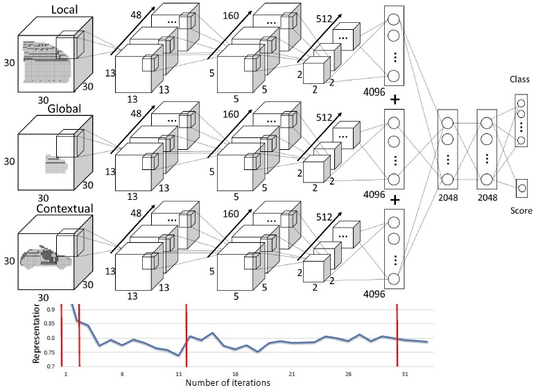

Learning to Group and Label Fine-Grained Shape Components
Xiaogang Wang1, Bin Zhou1,
Haiyue Fang1, Xiaowu Chen1, Qinping Zhao1, Kai Xu2,3
1Beihang University, 2National University of Defense Technology,
3Princeton University
(Kai Xu is the corresponding author.)
ACM Transactions
on Graphics (SIGGRAPH Asia 2018), 37(6)
This work studies a novel problem of semantic labeling of raw 3D models from online shape repositories, composed of highly fine-grained components.
Given a structurally complex 3D model, which comprises numerous human-crafted components, our method produces high quality labeling result (indicated
by distinct colors). This is achieved by aggregating the components into part hypotheses and characterizing these mid-level elements for robust grouping and
labeling of fine-grained components.
|
Abstract
|
A majority of stock 3D models in modern shape repositories are assembled
with many fine-grained components. The main cause of such data form is
the component-wise modeling process widely practiced by human modelers.
These modeling components thus inherently reflect some function-based
shape decomposition the artist had in mind during modeling. On the other
hand, modeling components represent an over-segmentation since a functional
part is usually modeled as a multi-component assembly. Based on
these observations, we advocate that labeled segmentation of stock 3D models
should not overlook the modeling components and propose a learning
solution to grouping and labeling of the fine-grained components. However,
directly characterizing the shape of individual components for the purpose
of labeling is unreliable, since they can be arbitrarily tiny and semantically
meaningless. We propose to generate part hypotheses from components
based on a hierarchal grouping strategy. Part hypotheses are mid-level elements
which are more probable to carry semantic information. A multi-scale
3D convolutional neural network is trained to extract context-aware features
for the hypotheses. To accomplish a labeled segmentation of the whole
shape, we formulate higher-order conditional random fields (CRFs) to infer
an optimal label assignment for all components. Extensive experiments
demonstrate that our method achieves significantly robust labeling results
on raw 3D models from public shape repositories. Our work also contributes
the first benchmark for component-wise labeling.
|
|
|
Paper |
|
|
|
Slides |
|
|
|
| Images |
An overview of our approach. Given a 3D model comprising many components (a), our method first performs hierarchical sampling of candidate part
hypotheses with a bottom-up grouping procedure (b). Each candidate is then fed into a multi-scale Convolutional Neural Networks which predicts
its label and regresses a confidence score against each part label (c). Finally, the optimal label of each component is inferred with a higher-order
Conditional Random Fields, based on the confidence scores (d).

The architecture of our multi-scale Convolutional Neural Networks (CNNs) for part hypothesis classification and confidence regression.
A gallery of semantic labeling results on raw 3D models with complicated structure. ‘GT’ denotes ground-truth labeling annotated manually.
|
|
|
| Thanks |
We thank the anonymous reviewers for their valuable comments.
This work was supported in part by NSFC (61572507, 61532003,
61622212).
|
|
|
Code
Data |
The source code and the benchmark dataset will be released soon.
|
|
|
| Bibtex |
@article
{wang_siga18,
title = {Learning to Group and Label Fine-Grained Shape Components},
author
= {Xiaogang Wang and Bin Zhou and Haiyue Fang and Xiaowu Chen and Qinping Zhao and Kai Xu},
journal
= {ACM Transactions on Graphics (SIGGRAPH Asia 2018)},
volume
= {37},
number
= {6},
pages
= {to appear},
year
= {2018}
}
|
 
 
|